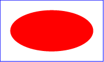

16.1. References
16.1.1. Overview
On the Internet, resources are identified using URLs (Internationalized Resource Identifiers). For example, an SVG file called someDrawing.svg located at http://example.com might have the following URL:
http://example.com/someDrawing.svg
An URL can also address a particular element within an XML document by including an URL fragment identifier as part of the URL. An URL which includes an URL fragment identifier consists of an optional base URL, followed by a "#" character, followed by the URL fragment identifier. For example, the following URL can be used to specify the element whose ID is "Lamppost" within file someDrawing.svg:
http://example.com/someDrawing.svg#Lamppost
16.1.2. Definitions
- URL reference
- An URL reference is an Internationalized Resource Identifier, as defined in Internationalized Resource Identifiers [rfc3987]. See References and References and the ‘defs’ element.
- URL reference with fragment identifier
- An Internationalized Resource Identifier [rfc3987] that can include an <absoluteURL> or <relativeURL> and a identifier of the fragment in that resource. See References and the ‘defs’ element. URL reference with fragment identifiers are commonly used to reference paint servers.
- external file reference
- A URL reference or URL reference with fragment identifier which refers to a resource that is not part of the current document.
- same-document URL reference
- A URL reference with fragment identifier where the non-fragment part of the URL refers to the current document.
- data URL
- A URL reference to an embedded document specified using the "data" URL scheme [rfc2397]. Data URL references are neither external file references nor same-document URL references.
- circular reference
- URL references that directly or indirectly reference themselves are treated as invalid circular references. What constitutes a circular reference will depend on how the referenced resource is used, and may include a reference to an ancestor of the current element.
- unresolved reference
- A reference that is still being processed, and has not yet resulted in either an error or an identified resource.
- invalid reference
-
Any of the following are invalid references:
- A circular reference.
- A URL reference that results in an error during processing.
- A URL reference that cannot be resolved.
- A URL references to elements which are inappropriate targets for the given reference shall be treated as invalid references (see Valid URL targets for appropriate targets). For example, the clip-path property can only refer to ‘clipPath’ elements. The property setting clip-path:url(#MyElement) is an invalid reference if the referenced element is not a ‘clipPath’.
Invalid references may or may not be an error (see Error processing), depending on whether the referencing property or attribute defines fallback behavior.
16.1.3. URLs and URIs
Internationalized Resource Identifiers (URLs) are a more generalized complement to Uniform Resource Identifiers (URIs). An URL is a sequence of characters from the Universal Character Set [UNICODE]. A URI is constructed from a much more restricted set of characters. All URIs are already conformant URLs. A mapping from URLs to URIs is defined by the URL specification, which means that URLs can be used instead of URIs in XML documents, to identify resources. URLs can be converted to URIs for resolution on a network, if the protocol does not support URLs directly.
Previous versions of SVG, following XLink, defined an URL reference type as a URI or as a sequence of characters which must result in an URL after a particular escaping procedure was applied. The escaping procedure was repeated in the XLink 1.0 specification [xlink], and in the W3C XML Schema Part 2: Datatypes specification [xmlschema-2]. This copying introduced the possibility of error and divergence, but was done because the URL specification was not yet standardized.
In this specification, the correct term URL is used for this "URI or sequence of characters plus an algorithm" and the escaping method, which turns URLs into URIs, is defined by reference to the URL specification [rfc3987], which has since become an IETF Proposed Standard. Other W3C specifications are expected to be revised over time to remove these duplicate descriptions of the escaping procedure and to refer to URL directly.
16.1.4. Syntactic forms: URL and <url>
In SVG, most structural relationships between two elements are specified using a URL value in an ‘href’ attribute.
To describe linking relationships, this specification uses two different data types in attribute and property values: URL and <url>. The linking guidelines in this chapter apply to URLs specified with either syntax.
The URL data type is a simple URL string. In SVG, most structural relationships between two elements are specified using a URL value in an ‘href’ attribute.
<url> is different from URL and represents a CSS url() function value.
(See CSS Values and Units for further details [css-values]). <url>s
may be used for presentation attributes and their corresponding CSS properties
[css-values].
URL is not a valid value for presentation attributes for structural relationships purposes. No non-presentation attribute allows <url> as value.
SVG makes extensive use of URL references, both absolute and relative,
to other objects.
For example, a ‘linearGradient’ element
may be based on another gradient element,
so that only the differences between the two need to be specified,
by referencing the source gradient with a URL in the ‘href’ attribute:
<linearGradient id="SourceGradient">...</linearGradient>
<linearGradient id="MyGradient"
href="#SourceGradient">...</linearGradient>
To fill a rectangle with that gradient,
the value of the rectangle’s fill property may be set so as to
include a URL reference to the relevant ‘linearGradient’ element;
here is an example:
16.1.5. URL reference attributes
URL references are normally specified with an ‘href’ attribute. The value of this attribute forms a reference for the desired resource (or secondary resource, if there is a fragment identifier). The value of the ‘href’ attribute must be a URL.
Because it is impractical for any application to check that a value is an URL reference, this specification follows the lead of the URL Specification in this matter and imposes no such conformance testing requirement on SVG authoring tools. An invalid URL does not make an SVG document non-conforming. SVG user agents are only required to process URLs when needed, as specified in Processing of URL references.
16.1.6. Deprecated XLink URL reference attributes
In previous versions of SVG, the ‘href’ attribute was specified in the XLink namespace [xlink] namespace. This usage is now deprecated and instead URL references should be specified using the ‘href’ attribute without a namespace.
For backwards compatibility, the deprecated ‘xlink:href’ attribute
is defined below along with the ‘xlink:title’ attribute which has also
been deprecated.
Attribute definitions:
-
Name Value Initial value Animatable xlink:hrefURL [URL] (none) (see below) -
For backwards compatibility, elements with an ‘href’ attribute also recognize an ‘href’ attribute in the XLink namespace [xlink].
When the ‘href’ attribute is present in both the XLink namespace and without a namespace, the value of the attribute without a namespace shall be used. The attribute in the XLink namespace shall be ignored.
A conforming SVG generator must generate ‘href’ attributes without a namespace. However, it may also generate ‘href’ attributes in the XLink namespace to provide backwards compatibility.
This attribute is Animatable if and only if the corresponding ‘href’ attribute is defined to be animatable.
-
Name Value Initial value Animatable xlink:title<anything> (none) no -
Deprecated attribute to describe the meaning of a link or resource in a human-readable fashion. New content should use a ‘title’ child element rather than a ‘xlink:title’ attribute.
The use of this information is highly dependent on the type of processing being done. It may be used, for example, to make titles available to applications used by visually impaired users, or to create a table of links, or to present help text that appears when a user lets a mouse pointer hover over a starting resource.
The ‘title’ attribute, if used, must be in the XLink namespace. Refer to the XML Linking Language (XLink) [xlink].
When using the deprecated XLink attributes ‘xlink:href’ or
‘xlink:title’ an explicit XLink namespace declaration must be provided
[xml-names],
One simple way to provide such an XLink namespace declaration
is to include an ‘xmlns’ attribute
for the XLink namespace on the ‘svg’ element for content that uses
XLink attributes. For example:
<svg xmlns:xlink="http://www.w3.org/1999/xlink" ...> <image xlink:href="foo.png" .../> </svg>
16.1.7. Processing of URL references
URLs are processed to identify a resource at the time they are needed, as follows:
- For the ‘
href’ attribute of the ‘a’ element, at the time the link is activated by the user. - For all other ‘href’ attributes, at the time the element is connected to a document, or at the time when the attribute is set, whichever is later.
- For source URLs on embedded HTML media elements, as required based on source selection rules in the HTML specification [HTML].
- For all presentation attributes and style properties, at the time the property is required for rendering an element.
Legacy ‘xlink:href’ attributes are processed
at the time a corresponding ‘href’ attribute would be processed,
but only if no such ‘href’ attribute exists on the element.
Processing a URL involves three steps: generating the absolute URL; fetching the document (if required); identifying the target element (if required).
A URL reference is unresolved until processing either results in an invalid reference or in the identification of the target resource. Unresolved references in the non-presentation attributes of structurally external elements prevent the load event from firing. User agents may place time limits on the resolution of references that are not same-document URL references, after which the reference is treated as a network error (and therefore as an invalid reference).
For same-document URL references in a dynamic document, modifications or animations of attributes or properties, or removal of elements from the DOM, may cause an URL reference to return to the unresolved state. The user agent must once again attempt to resolve the URI to identify the referenced resource.
16.1.7.1. Generating the absolute URL
If the URL reference is relative, its absolute version must be computed before use. The absolute URL should be generated using one of the following methods:
- as described in CSS Values and Units if the reference occurs in a CSS file or in a presentation attribute [css-values]
- as described in XML Base before use [xmlbase] if the reference occurs in any other attribute in an XML document
- as described in the HTML specification if the reference occurs in a non-presentation attribute in an HTML document that is not an XML document [HTML]
The ‘xml:base’ attribute
will only have an effect in XML documents;
this includes SVG documents and XHTML documents but not HTML documents that are not XML.
In contrast, a base element
affects relative URLs in any SVG or HTML document,
by altering the document base URL.
If the protocol, such as HTTP, does not support URLs directly, the URL must be converted to a URI by the user agent, as described in section 3.1 of the URL specification [rfc3987].
After generating the absolute URL:
-
If the URL is being processed following the activation of a link, the user agent must follow the algorithm for navigating to a URL described in the HTML specification [HTML]. The outcome of this algorithm varies depending on the ‘
target’ browsing context and security restrictions between browsing contexts, and on whether the link is to the same document as is currently contained in that browsing context (in which case the fragment is navigated without reloading the document). If the document that was navigated was an SVG document, then adjust the target behavior as described in Linking into SVG content. -
If the URL being processed is only valid if it refers to a complete document file (such as the ‘href’ attribute of an ‘
image’ and ‘script’ element), continue as indicated in Fetching the document (regardless of whether the URL is to the same document or not). -
In all other cases, the URL is for a resource to be used in this SVG document. The user agent must parse the URL to separate out the target fragment from the rest of the URL, and compare it with the document base URL. If all parts other than the target fragment are equal, this is a same-document URL reference, and processing the URL must continue as indicated in Identifying the target element with the current document as the referenced document.
-
Otherwise, the URL references a separate document, and the user agent must continue processing the URL as indicated in Fetching the document.
As defined in CSS Values and Units, a fragment-only URL in a style property must be treated as a same-document URL reference, regardless of the file in which the property was declared.
16.1.7.2. Fetching the document
SVG properties and attributes may reference other documents. When processing such a URL, the user agent should fetch the referenced document as described in this section, except under the following conditions:
-
If the URL reference is from the href attribute on SVG animation elements, only same-document URL references are allowed [svg-animation]. A URL referring to a different document is invalid and the document must not be fetched.
-
If the document containing the reference is being processed in secure static mode or secure animated mode, external file references are disallowed. Unless the reference is a data URL, the user agent must treat the reference as if there was a network error, making this an invalid reference.
-
If any other security restrictions on the browsing context or user agent prevent accessing the external file, then the user agent must treat the reference as if there was a network error.
When fetching external resources from the Internet, user agents must use a potentially CORS-enabled request as defined in HTML [HTML] with the corsAttributeState as follows:
-
For an ‘href’ reference on an
‘
image’ element or ‘script’ element, the CORS state specified by the ‘crossorigin’ attribute. - For a reference from a style property or presentation attribute, the "anonymous" state.
- For all other references, the "no-cors" state.
base
The request’s origin is computed using the
same rules as HTML,
with an SVG ‘script’ element treated like an HTML script element,
and an SVG ‘image’ element treated like an HTML img element.
The default origin behaviour must be set to taint.
A future SVG specification may enable CORS references on other SVG elements with ‘href’ attributes.
If the fetching algorithm results in an error or an empty response body, the reference URL is treated as an invalid reference.
If a valid response is returned, and the valid URL targets for the reference include specific element types, the user agent must continue by Processing the subresource document. Otherwise (if only entire-document the URL references are valid), then the fetched document is the referenced resource.
16.1.7.3. Processing the subresource document
Otherwise, the subresource must be parsed to identify the target element. If the fetched document is a type that the user agent can parse to create a document object model, it must process it in secure static mode (meaning, do not fetch any additional external resources and do not run scripts or play animations). The document model generated for an external subresource reference must be immutable (read-only) and cannot be modified.
If a document object model can be generated from the fetched file, processing the URL must continue as indicated in Identifying the target element with the parsed subresource document as the referenced document. The user agent may commence the target-identification process prior to completely parsing the document.
User agents may maintain a list of external resource URLs and their associated parsed documents, and may re-use the documents for subsequent references, so long as doing so does not violate the processing mode, caching, and CORS requirements on the resource.
16.1.7.4. Identifying the target element
For URL references to a specific element, whether the reference is valid depends on whether the element can be located within the referenced document and whether it is of an allowed type.
Using the referenced document identified in previous processing steps (either an external subresource document or the current document), the target element is identified as follows:
-
If the URL does not specify a specific element in a target fragment, the target element is the root element of the referenced document.
-
Otherwise, the URL targets a specific element. If a matching element currently exists in the referenced document, then it is the target element.
-
Otherwise, there is no currently matching element. If the referenced document is immutable, then the URL reference is invalid. An external subresource document is always immutable once fully parsed; the current document is also immutable once parsed if it is being processed in any mode other than dynamic interactive mode.
-
Otherwise, observe mutations to the referenced document until the URL can be successfully resolved to define a target element, or until the document becomes immutable (e.g., a non-dynamic document finishes parsing).
The target element provides the referenced resource if (and only if) it is a valid URL target for the reference.
16.1.7.5. Valid URL targets
The valid target element types for ‘href’ (or ‘xlink:href’) attributes are based on the element that has the attribute, as follows:
- the ‘
a’ element can reference any local or non-local resource - the ‘
image’ element must reference a document that can be processed as an image - the ‘
linearGradient’ element must reference a different ‘linearGradient’ or ‘radialGradient’ element - the ‘
pattern’ element must reference another ‘pattern’ element - the ‘
radialGradient’ element must reference a ‘linearGradient’ or another ‘radialGradient’ element - the ‘
script’ element must reference an external document that provides the script content - the ‘
textPath’ element must reference an element type that implements theSVGGeometryElementinterface - the ‘
use’ element must reference an SVG-namespaced element
The valid target element types for style properties defined in this specification are as follows:
- the fill property (see Specifying paint for reference rules)
- the marker, marker-start, marker-mid and marker-end properties must reference a ‘
marker’ element. - the stroke property (see Specifying paint for reference rules)
For references that allow either a reference to a target element, or to an image file (such as the mask property), the user agent must identify the target element and determine whether it is a valid target. If the resolved target element is not an allowed element type, the referenced resource is the entire document file; the target fragment is used in processing that file as with any other image.
In all other cases, if the resolved target element type (or document type) is not allowed for the URL reference, it is an invalid reference.
16.2. Links out of SVG content: the ‘a’ element
SVG provides an ‘a’ element, to indicate links (also known
as hyperlinks or Web links).
An ‘a’ element forms a link if it has a ‘href’ or ‘xlink:href’ attribute; without these attributes the ‘a’ element is an inactive placeholder for a link.
SVG 1.1 defined links in terms of the XLink specification ([XLink]), using attributes defined in the XLink namespace. SVG 2 uses an alternative set of attributes in the default namespace that are consistent with HTML links, and deprecates the XLink attributes.
The ‘a’ element may
contain any element that its parent may contain, except for another ‘a’ element;
the same element is used for both graphical and textual linked content.
Links may not be nested;
if an ‘a’ element is a descendent of another hyperlink element
(whether in the SVG namespace or another namespace),
user agents must ignore its href attribute and treat it as inactive.
The invalid ‘a’ element must still be rendered as a generic container element.
The rendering of invalid nested links is at risk, and will likely be synchronized with any decisions regarding the rendering of unknown elements.
For pointer events processing,
a linked hit region is defined for each separate rendered element contained
within the ‘a’ element (according to the value of their pointer-events property),
rather than for the bounding box of the ‘a’ element itself.
User agents must also ensure that all links are focusable and can be activated by keyboard commands.
The remote resource (the destination for the link) is defined by
a URL specified by the ‘href’ attribute on the ‘a’
element. The remote resource may be any Web resource (e.g., an image, a video
clip, a sound bite, a program, another SVG document, an HTML document, an
element within the current document, an element within a different document, etc.).
In response to user activation of a link
(by clicking with the mouse, through keyboard input, voice commands, etc.),
user agents should attempt to fetch the specified resource document and either display it or make it available as a downloaded file.
Example link01 assigns a link to an ellipse.
<?xml version="1.0" standalone="no"?>
<svg width="5cm" height="3cm" viewBox="0 0 5 3" version="1.1"
xmlns="http://www.w3.org/2000/svg">
<desc>Example link01 - a link on an ellipse
</desc>
<rect x=".01" y=".01" width="4.98" height="2.98"
fill="none" stroke="blue" stroke-width=".03"/>
<a href="https://www.w3.org">
<ellipse cx="2.5" cy="1.5" rx="2" ry="1"
fill="red" />
</a>
</svg>

Example link01

If the above SVG file is viewed by a user agent that supports both SVG and HTML, then clicking on the ellipse will cause the current window or frame to be replaced by the W3C home page.
a’- Categories:
- Container element, renderable element
- Content model:
- Descriptive content, plus any element or text allowed by its parent’s content model, except for another a element. If the parent is a switch element, use the content model of the nearest ancestor that isn’t a switch.
- Attributes:
- DOM Interfaces:
Attribute definitions:
-
Name Value Initial value Animatable hrefURL [URL] (none) yes - The location of the referenced object, expressed as an URL reference. Refer to the common handling defined for URL reference attributes.
-
Name Value Initial value Animatable target_self | _parent | _top | _blank | <XML-Name> _self yes -
This attribute should be used when there are multiple possible targets for the ending resource, such as when the parent document is embedded within an HTML or XHTML document, or is viewed with a tabbed browser. This attribute specifies the name of the browsing context (e.g., a browser tab or an (X)HTML iframe or object element) into which a document is to be opened when the link is activated:
- _self
- The current SVG image is replaced by the linked content in the same browsing context as the current SVG image.
- _parent
- The immediate parent browsing context of the SVG image is replaced by the linked content, if it exists and can be securely accessed from this document.
- _top
- The content of the full active window or tab is replaced by the linked content, if it exists and can be securely accessed from this document
- _blank
- A new un-named window or tab is requested for the display of the linked content, if this document can securely do so. If the user agent does not support multiple windows/tabs, the result is the same as _top.
- <XML-Name>
- Specifies the name of the browsing context (tab, inline frame, object, etc.) for display of the linked content. If a context with this name already exists, and can be securely accessed from this document, it is re-used, replacing the existing content. If it does not exist, it is created (the same as '_blank', except that it now has a name). The name must be a valid XML Name [XML11], and should not start with an underscore (U+005F LOW LINE character), to meet the requirements of a valid browsing context name from HTML.
The normative definitions for browsing contexts and security restrictions on navigation actions between browsing contexts is HTML [HTML], specifically the chapter on loading web pages.
Previous versions of SVG defined the special target value '_replace'. It was never well implemented, and the distinction between '_replace' and '_self' has been made redundant by changes in the HTML definition of browsing contexts. Use '_self' to replace the current SVG document.
The value '_new' is not a legal value for target. Use '_blank' to open a document in a new tab/window.
-
Name Value Initial value Animatable downloadany value (if non-empty, value represents a suggested file name) (none) no pingspace-separated valid non-empty URL tokens [HTML] (none) no relspace-separated keyword tokens [HTML] (none) no hreflangA BCP 47 language tag string [HTML] (none) no typeA MIME type string [HTML] (none) no referrerpolicyA referrer policy string [REFERRERPOLICY] (none) no -
These attributes further describe the targetted resource
and its relationship to the current document.
Allowed values and meaning are as defined for the
aelement in HTML.The SVG Working Group is waiting on the HTML specification to clarify the processing model and algorithms for these attributes. The attributes should follow the definitions and algorithms as specified in the HTML specification.
For more details on the ongoing clarification effort, see theHTML specification issue on processing model and algorithms for the HTML A element.
16.3. Linking into SVG content: URL fragments and SVG views
Because SVG content often represents a picture or drawing of something, a common need is to link into a particular view of the document, where a view indicates the initial transformations so as to present a closeup of a particular section of the document.
16.3.1. SVG fragment identifiers
| SVG 2 Requirement: | Merge the SVG 1.1 SE text and the SVG Tiny 1.2 text on fragment identifiers link traversal and add media fragments. |
|---|---|
| Resolution: | SVG 2 will have media fragment identifiers. |
| Purpose: | To align with Media Fragments URI. |
| Owner: | Cyril (ACTION-3442) |
To link into a particular view of an SVG document, the URL reference with fragment identifier needs to be a correctly formed SVG fragment identifier. An SVG fragment identifier defines the meaning of the "selector" or "fragment identifier" portion of URLs that locate resources of MIME media type "image/svg+xml".
An SVG fragment identifier can come in the following forms:
- Shorthand bare name form of addressing (e.g., MyDrawing.svg#MyView). This form of addressing, which allows addressing an SVG element by its ID, is compatible with the fragment addressing mechanism for older versions of HTML.
- An SVG view specification (e.g., MyDrawing.svg#svgView(viewBox(0,200,1000,1000))). This form of addressing specifies the desired view of the document (e.g., the region of the document to view, the initial zoom level) completely within the SVG fragment specification. The contents of the SVG view specification are defined in SVG fragment identifiers definitions section.
- Basic media fragments identifiers of type spatial or temporal (e.g., MyDrawing.svg#xywh=0,200,1000,1000 or MyAnimation.svg#t=10)) as defined in [Media Fragments URI 1.0 (basic)] and possibly combined using the & sign (e.g. MyDrawing.svg#xywh=0,200,1000,1000&t=10).
16.3.2. SVG fragment identifiers definitions
An SVG fragment identifier is defined as follows:
SVGFragmentIdentifier ::= BareName *( "&" timesegment ) | SVGViewSpec *( "&" timesegment ) | spacesegment *( "&" timesegment ) | timesegment *( "&" spacesegment ) BareName ::= XML_Name SVGViewSpec ::= 'svgView(' SVGViewAttributes ')' SVGViewAttributes ::= SVGViewAttribute | SVGViewAttribute ';' SVGViewAttributes SVGViewAttribute ::= viewBoxSpec | preserveAspectRatioSpec | transformSpec viewBoxSpec ::= 'viewBox(' ViewBoxParams ')' preserveAspectRatioSpec = 'preserveAspectRatio(' AspectParams ')' transformSpec ::= 'transform(' TransformParams ')'
where:
- ViewBoxParams corresponds to the
parameter values for the ‘viewBox’ attribute on the ‘
view’ element. For example, viewBox(0,0,200,200). - AspectParams corresponds to the
parameter values for the ‘preserveAspectRatio’ attribute on the
‘
view’ element. For example, preserveAspectRatio(xMidYMid). - TransformParams corresponds to the parameter values for the transform property that is available on many elements. For example, transform(scale(5)). Currently additional transform styles and parameters (e.g. transform-origin, perspective) are not supported.
SVG view box parameters are applied in order, as defined in CSS Transforms specification (e.g. SVG view is transformed as defined in ViewBoxParams, then as defined in TransformParams).
Spaces are allowed in fragment specifications. Commas are used to separate numeric values within an SVG view specification (e.g., #svgView(viewBox(0,0,200,200))) and semicolons are used to separate attributes (e.g., #svgView(viewBox(0,0,200,200);preserveAspectRatio(none))).
Fragment identifiers may be url-escaped according to the rules defined in CSS Object Model (CSSOM) specification. For example semicolons can be escaped as %3B to allow animating a (semi-colon separated) list of URLs because otherwise the semicolon would be interpreted as a list separator.
The four types of SVGViewAttribute may occur in any order, but each type may only occur at most one time in a correctly formed SVGViewSpec.
When a source document performs a link into an SVG document, for example via an HTML anchor element ([HTML]; i.e., <a href=...> element in HTML) or an XLink specification [xlink], then the SVG fragment identifier specifies the initial view into the SVG document, as follows:
- If no SVG fragment identifier is provided (e.g, the specified URL did not contain a "#" character, such as MyDrawing.svg), then the initial view into the SVG document is established using the view specification attributes (i.e., ‘viewBox’, etc.) on the outermost svg element.
- If the SVG fragment identifier addresses a space segment (e.g., MyDrawing.svg#xywh=0,0,100,100),then the initial view into the SVG document is established using the view specification attributes on the outermost svg element where the 'viewBox' is overriden by the x, y, width and height values provided by the fragment identifier.
- Media fragments can be specified as "pixel:" (default) and "percent:". In the latter case the resulting 'viewBox' transformation is calculated against referenced SVG resolved size (width and height). When the host document cannot resolve the width and height of the SVG document, the used values for width and height should be calculated according to CSS rules for calculating width and ratio for inline replaced elements.
- If the SVG fragment identifier addresses a time segment (e.g., MyDrawing.svg#t=10),then the initial view into the SVG document is established as if no fragment identifier was provided. The rendering of the SVG Document shall be as if the setCurrentTime method on the SVG Document element had been called with the begin time value from the fragment identifier. Additionally, if an end time value is provided in the fragment identifier, the effect is equivalent to calling the pauseAnimations method on the SVG Document when the document time reaches the end time of the fragment identifier.
- If the SVG fragment identifier addresses a ‘
view’ element within an SVG document (e.g., MyDrawing.svg#MyView) then the root ‘svg’ element is displayed in the SVG viewport. Any view specification attributes included on the given ‘view’ element override the corresponding view specification attributes on the root ‘svg’ element. - If the SVG fragment identifier addresses specific SVG view (e.g.,
MyDrawing.svg#svgView(viewBox(0,200,1000,1000))),
then the document fragment defined by the root ‘
svg’ element is displayed in the SVG viewport using the SVG view specification provided by the SVG fragment identifier. Parameters of the svgView specification override the parameters defined on the root ‘svg’ element of the referenced document. Unspecified parameters of the svgView specification don’t reset the values defined on the root ‘svg’ element of the referenced document. - If the SVG fragment identifier addresses a combination of the above non-time related identifiers with a time-related identifier (i.e. a timesegment), the behavior of each identifier is applied.
16.3.3. Predefined views: the ‘view’ element
The ‘view’ element is defined as follows:
We have resolved to remove viewTarget attribute.
Resolution: Paris 2015 F2F Day 3.
Owner: BogdanBrinza.
16.4. DOM interfaces
16.4.1. Interface SVGAElement
An SVGElement object represents an ‘a’ element in the DOM.
[Exposed =Window ]interface :SVGAElement SVGGraphicsElement { [Reflect ,SameObject ]readonly attribute SVGAnimatedString ; [target Reflect ]attribute DOMString ; [download Reflect ]attribute USVString ; [ping Reflect ]attribute DOMString ; [rel Reflect ="rel",SameObject ,PutForwards =value ]readonly attribute DOMTokenList ; [relList Reflect ]attribute DOMString ; [hreflang Reflect ]attribute DOMString ;type attribute DOMString referrerPolicy ; };SVGAElement includes SVGURIReference ;SVGAElement includes HyperlinkElementUtils ;
The set the url algorithm for an SVGAElement:
- Set this element’s url to null.
- Let url be failure.
-
If this element’s ‘href’ content attribute is present:
- Set url to the result of encoding-parsing a URL given this element’s ‘href’ content attribute’s value, relative to this element’s node document.
-
Otherwise, if this element’s ‘xlink:href’ content attribute is present:
- Set url to the result of encoding-parsing a URL given this element’s ‘xlink:href’ content attribute’s value, relative to this element’s node document.
- If url is not failure, then set this element’s url to url.
To update href for an SVGAElement:
-
If this element’s ‘xlink:href’ content attribute is present:
- Set the element’s ‘xlink:href’ content attribute’s value to the element’s url, serialized.
- Otherwise, set the element’s ‘href’ content attribute’s value to the element’s url, serialized.
The referrerPolicyreferrerpolicy’ content attribute,
limited to only known values.
16.4.2. Interface SVGViewElement
An SVGViewElement object represents a ‘view’ element in the DOM.
[Exposed =Window ]interface :SVGViewElement SVGElement {};SVGViewElement includes SVGFitToViewBox ;